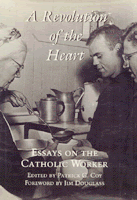

<body bgcolor="#FFFFFF" text="#000000" link="#0000FF" vlink="#CC0000" alink="#CC0000"><center><hr width="350" size="1" align="center" noshade>Analyzing the significance of the experiment of voluntary poverty, gospel nonviolence, and solidarity with the poor<hr width="350" size="1" align="center" noshade><p><a href="https://cdcshoppingcart.uchicago.edu/Cart/ChicagoBook.aspx?ISBN=9780877225317&&PRESS=temple" target="_top">Buy this book!</a> | <a href="https://cdcshoppingcart.uchicago.edu/Cart/Cart.aspx?PRESS=temple" target="_top">View Cart</a> | <a href="https://cdcshoppingcart.uchicago.edu/Cart/Cart.aspx?PRESS=temple" target="_top">Check Out</a></p><p></p></center><!--none//--><h1>A Revolution of the Heart</h1>
<H2>Essays on the Catholic Worker</H2>
<h3>edited by Patrick G. Coy, foreword by Jim Douglass</h3>
<P>cloth 0-87722-531-1 $64.50, Jun 88, <FONT COLOR=#990033>Out of Stock Unavailable</FONT>
<BR> 408 pp
</P><BLOCKQUOTE><I>"This anthology contains many excellent, well-written, and original essays that examine the leadership values and daily experiences of the Catholic Worker movement. Most notable are the pieces describing the personal and concrete dimensions of local Catholic Worker communities outside of New York. They offer wonderful insight into the promise of open and apostolic Catholic community and begin to fill a long-noted gap in Worker History."</I>
<br>&#151<b>David O'Brien</b>, Holy Cross College<I></I></BLOCKQUOTE>
<p>These new essays by scholars, activists and workers examine themes, events, and people that have shaped and continue to build the Catholic Worker movement. Voices from both inside and outside the movement provide a much-needed analysis of the ongoing significance of the Worker experiment of voluntary poverty, gospel nonviolence, and solidarity with the poor as a movement in U.S. religious history.
<p>Five of the eleven essays focus on individuals who were central to the movement's development: Dorothy Day, Peter Maurin, and Ammon Hennacy. Four essays explore critically important themes of the Catholic Worker: the practice of nonviolence in the often violent atmosphere of hospitality houses for the homeless, prophetic spirituality, the relationship of radical politics to religious orthodoxy, and the differences and similarities between Catholic Worker pacifism and Vietnam-era draft board raids led by the Berrigan brothers. A final section attends to the decentralized nature of this essentially anarchist movement offering case histories of Worker communities in St. Louis and Chicago.
<p>With increasing numbers of Christians turning to the gospel call of peace, simplicity, and service, and with over one hundred Catholic Worker communities existing in the United States, this timely collection offers a fresh analysis of the movement's tradition, and its contribution to American culture.
<BR>&nbsp;<h2>Reviews</h2>
<p><I>"A very significant book. The essays tell in their different ways an inspiring and important story for anyone seriously interested in our common human destiny."</I>
<br>&#151<b>Lawrence F. Barmann</b>, St. Louis University
<p><I>"A veritable treasury of information for all who would like to know the who, how, when, and why of a movement with a heart big enough to make room for all who come through the door."</I>
<br>&#151<b>Virginia Baron</b>, editor, <I>Fellowship</I>, the magazine of the Fellowship of Reconciliation
<BR>&nbsp;<H2>About the Author(s)</H2>
<P><b>Patrick G. Coy</b>, formerly Coordinator of the Peace and Justice Ministry at St. Louis University, is a member of the Karen Catholic Worker House Community and is on the National Council of the Fellowship of Reconciliation.</P>
<BR><H2>Subject Categories</H2>
<p><A HREF="/tempress/american.html" TARGET="_top">American Studies</a>
<BR><A HREF="/tempress/religion.html" TARGET="_top">Religion</a>
<BR><A HREF="/tempress/philosophy.html" TARGET="_top">Philosophy and Ethics</a>
</p>
<p align="center"><a href="https://cdcshoppingcart.uchicago.edu/Cart/ChicagoBook.aspx?ISBN=9780877225317&&PRESS=temple" target="_top">Buy this book!</a> | <a href="https://cdcshoppingcart.uchicago.edu/Cart/Cart.aspx?PRESS=temple" target="_top">View Cart</a> | <a href="https://cdcshoppingcart.uchicago.edu/Cart/Cart.aspx?PRESS=temple" target="_top">Check Out</a></p><p><font face="Arial" size="1"><a href="copyright.html" onMouseOver="window.status='Web Copyright Policy';return true;" onMouseOut="window.status=''" title="Web Copyright Policy">&copy;</a> 2015 <a href="http://www.temple.edu" target="new" onMouseOver="window.status='Link to Temple University home page';return true;" onMouseOut="window.status=''" title="Link to Temple University home page">Temple University</a>. All Rights Reserved. http://www.temple.edu/tempress/titles/544_reg.html</font></p>